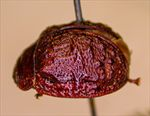
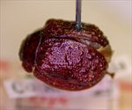
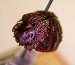
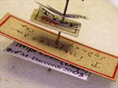
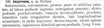

Click on images to enlarge
.jpg){kind=link}

Fig. 1. Paropsis impressa type specimen, lateral view
.jpg){kind=link}

Fig. 2. Paropsis impressa type specimen, dorsal view
.jpg){kind=link}

Fig. 3. Paropsis impressa type specimen, anterior view
.jpg){kind=link}

Fig. 4. Paropsis impressa type specimen, labels
{kind=link}

Fig. 5. Paropsis impressa, description
Name
Paropsis impressa Chapuis, 1877
Corresponds to
Ta07, but see notes below.
Diagnosis and Notes
Blackburn (1897) indicates that he has not seen an authenic type specimen, and deals with it from the description only. In his key, he includes P. impressa in his subgroup iv (i.e., those species without "strongly marked characters", whose greatest height is considerably in front of the middle of the elytral margin). Within that group, he characterises it as:
A. Prothorax distinctly explanate at the sides;
B. Subhumeral depression present;
CC. Elytral verrucae not as in C [i.e., elytral verrucae not concolorous with derm and/or not closely set in regular series and/or not large];
DD. The elytral verrucae large and prominent (concolorous with derm).
This is likely Ta07, identified as such from a typical New England Tablelands female specimen by B.J. Selman (pers. comm, 1979). In many respects the dorsal sculpture of the type is is rather similar to that of typical Ta07, with verrucae more prominent and isolated in the posterior half of the elytra and some prominent transverse ridges present just behind the post-basal impression. The post-basal impression seems different in form. In typical specimens of Ta07, it is relatively deep but quite compact and divided in two by a ridge that is part of VR3. It seems more extended laterally and shallower in the type, though this could be due to the lighting, as these comparisons are based solely on photos of the type. However, if Chapuis' value of 8 mm for the type's body length is correct, this would be exceptionally small for a female specimen of Ta07. The estimated HCE/BL of the type of 21.5% is also below the values typically seen in Ta07.
Type specimen
Location: RBINS
Label data: /"Sidney"/ “Coll. Chapuis”/ "TYPE"/ "Type"/ “P. impressa Sydney Chp.”/ “Trachymela impressa (Chap) ref. M. Daccordi 2003”/.
Female; length 8 mm (from Chapuis' description); HCE/BL ~ 21.5% (estimated from photo of type specimen).
Original description
Translation of original description (Figure 5) by ChatGPT, 03/2026:
Somewhat rounded, reddish-chestnut; pronotum somewhat and finely punctured, deeply impressed on each side, subrugulose-punctate; elytra deeply punctate-striated, the humeri with elevated gibbosities, punctate; interstices strongly irregularly raised, at the base longitudinally somewhat subcarinate, in the middle transversely raised-rugose, toward the apex tuberculate; discal impression moderately deep. Length 8 mm.
References
Blackburn, T. 1897, "Revision of the genus Paropsis. Part II", Proceedings of the Linnean Society of New South Wales, vol. 22, 166-189 (page 166).
Copyright © 2026. All rights reserved.